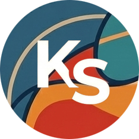

ผมเป็นนักพัฒนาที่คาดหวังเครื่องมือที่ทำงานได้รวดเร็ว เบาเครื่อง และใช้งานง่าย ด้วยความก้าวหน้าของเทคโนโลยีในปัจจุบัน ผมได้นำพลังของ AI มาประยุกต์ใช้ในทุกขั้นตอนการพัฒนา ตั้งแต่การออกแบบโครงสร้าง (Architecture) ไปจนถึงการเขียนซอร์สโค้ด (Coding)
ผลงานทั้งหมดใน KS Play Foft ถูกพัฒนาขึ้นโดยใช้ AI ช่วยเขียนโค้ด เช่นภาษา Swift, C เพื่อให้ซอฟต์แวร์สามารถทำงานได้ประสิทธิภาพสูงสุด ทั้งด้านความเร็วและการประหยัดทรัพยากร
มุ่งมั่นสร้างสรรค์ผลงานที่ช่วยแก้ปัญหา (Pain point) ในชีวิตประจำวันของผู้คน ไม่ว่าจะเป็นการจัดการไฟล์ที่คุ้นเคย การดูรูปภาพที่รวดเร็ว หรือการถนอมแบตเตอรี่ ทุกผลงานถูกสร้างมาเพื่อจุดประสงค์สูงสุดคือ "คาดหวังให้คุณภาพชีวิตของเราดีขึ้น"